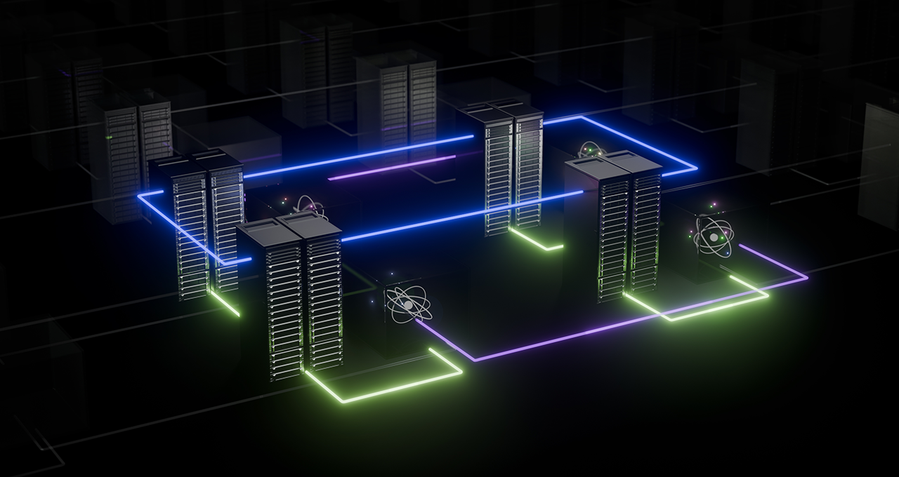

Hybrid Quantum-Classical Computing with CUDA-Q
Hybrid quantum–classical computing is emerging as a practical path to get value from quantum algorithms today, well before we have large-scale fault-tolerant quantum hardware. In this model, quantum processors (QPUs) handle intrinsically quantum tasks (like state preparation and entanglement), while classical processors (CPUs and GPUs) do the heavy lifting for optimization, simulation, and orchestration.

Fig 1: Hybrid quantum-classical computingCUDA-Q is a platform designed specifically to make this kind of hybrid workflow natural, performant, and portable.
Why hybrid quantum–classical?
Many near-term quantum algorithms are variational or iterative:
- A classical optimizer proposes parameters.
- A quantum circuit runs with those parameters and returns measurement statistics.
- The classical side updates the parameters and repeats.
Examples include VQE (variational quantum eigensolver) and QAOA (quantum approximate optimization algorithm).
For example, VQE is a hybrid algorithm for quantum chemistry, quantum simulations and optimization problems that writes the Hamiltonian \(\hat{H}\) as a linear combination of Pauli strings \(\hat{P}\) (of the form e.g. \(X\otimes{I}\otimes{Z}\otimes{X}\)), such that:
for some numerical coefficients \(\alpha_i\).
Below is an interactive widget that demonstrates the VQE algorithm.
These algorithms may require thousands of circuit evaluations, making performance, latency, and resource management critical.
CUDA-Q targets exactly this loop, enabling:
- Fast quantum circuit simulation on GPUs.
- Tight integration with classical code (Python or C++).
- Seamless scaling from a laptop to multi-GPU or cluster environments.
For more background, see the CUDA-Q documentation and its API reference.
Installing CUDA-Q
Below is a minimal example of how you might get started with CUDA-Q on a development machine using Python. Always verify details in the official install guide, as system requirements can evolve.
1. Set up a Python environment
python -m venv cudaq-env
source cudaq-env/bin/activate # On Windows: cudaq-env\Scripts\activate
pip install --upgrade pip
2. Install CUDA-Q
If you are targeting GPU-accelerated simulation, ensure you have a compatible NVIDIA GPU, appropriate drivers, and the CUDA toolkit installed as recommended in the documentation.
You can quickly test your installation with:
A minimal hybrid quantum–classical loop
The snippet below shows a simple example that:
- Defines a quantum kernel (circuit) with a tunable rotation.
- Evaluates an expectation value.
- Wraps it in a classical loop that naively scans over parameters.
import numpy as np
import cudaq
@cudaq.kernel
def ansatz(theta: float):
q = cudaq.qvector(1)
ry(theta, q[0])
mz(q[0])
def expectation(theta: float) -> float:
# Run many shots to estimate the expectation of Z
result = cudaq.sample(ansatz, theta, shots_count=1000)
counts = result.counts()
# Map bit strings to ±1 eigenvalues of Z
exp = 0.0
total = sum(counts.values())
for bitstring, c in counts.items():
z_val = +1.0 if bitstring == "0" else -1.0
exp += z_val * (c / total)
return exp
thetas = np.linspace(0.0, np.pi, 9)
for t in thetas:
print(f"theta={t:.3f}, <Z>={expectation(t): .3f}")
Here, the quantum part (ansatz) is clearly separated from the classical control logic (expectation and the loop over thetas). CUDA-Q makes it natural to refine this into a more sophisticated optimization loop using, for example, SciPy optimizers or custom GPU-accelerated optimizers.
Why CUDA-Q is well-suited for hybrid workflows
A few high-level benefits that are particularly relevant to hybrid quantum–classical computing:
-
Unified programming model
Use Python or C++ to express both the quantum kernel and the surrounding classical control logic. No need to stitch together multiple tools or languages. -
GPU-accelerated simulation
Leverage GPUs to simulate quantum circuits, which is crucial while real QPUs are limited in scale and availability. Larger simulations help you prototype and debug algorithms before deploying on hardware. -
Backend flexibility
Target different quantum backends (simulators and hardware) without rewriting your high-level algorithm. This is vital for experiments that may span multiple generations of quantum devices. -
Integration with existing HPC workflows
CUDA-Q is designed with HPC in mind, making it easier to incorporate quantum steps into existing GPU-accelerated pipelines for AI, physics, chemistry, and more.